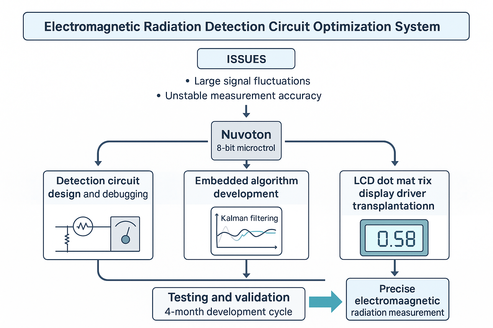

图1：电磁辐射检波电路系统架构图
基于Kalman滤波的信号稳定性提升研究
电磁辐射检波电路在环境监测、工业检测、安全防护等领域具有重要应用价值。传统检波电路存在信号波动较大、测量精度不稳定等问题，严重影响了系统的可靠性和实用性。
本研究旨在通过嵌入式算法优化和硬件改进，解决检波电路中信号波动大的技术难题。通过引入Kalman滤波算法，实现对检波信号的平滑处理，显著提升系统的测量精度和稳定性。
系统基于新唐8位微控制器平台，采用Kalman滤波算法对检波信号进行实时处理，结合硬件电路优化和LCD显示驱动移植，构建完整的电磁辐射检测解决方案。
Kalman滤波器是一种递归估计算法，能够有效处理包含噪声的测量数据。在电磁辐射检测中，检波电路输出的信号往往包含各种噪声和干扰，通过Kalman滤波算法可以实时估计真实信号值，滤除噪声成分。
系统采用嵌入式架构，在微控制器上实现实时信号处理算法，通过LCD点阵屏实时显示检测结果，为用户提供直观的测量数据展示。

| 性能参数 | 指标值 | 说明 |
|---|---|---|
| 信号稳定性 | 显著提升 | 通过Kalman滤波减少信号波动 |
| 测量精度 | 明显改善 | 检波电路测量精度得到提升 |
| 响应时间 | 实时处理 | 嵌入式算法实时响应 |
| 系统稳定性 | 高稳定性 | 硬件软件协同优化 |
| 开发周期 | 4个月 | 从设计到完成的总时间 |
本研究在电磁辐射检测、环境监测、工业安全等领域具有重要应用价值。通过提供稳定可靠的检测解决方案，为相关领域的科研工作和实际应用提供了技术支撑。
成功解决了检波电路信号波动问题，实现了电磁辐射的精确测量，完成了LCD点阵屏的驱动移植，建立了完整的测试验证体系，为后续产品开发奠定了技术基础。